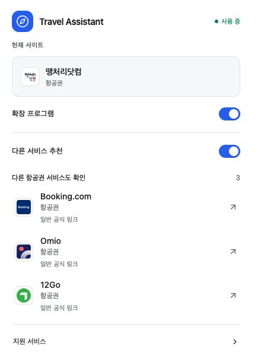

지원 사이트 방문
기기에서 현재 사이트와 페이지의 카테고리를 인식합니다.
TRAVEL ASSISTANT · RUSHLABS
여행 사이트를 탐색하면서 관련 서비스를 발견하도록 돕는 Chrome 확장 프로그램입니다. 필요한 추천을 살펴보고, 사용자가 직접 다음 방문을 선택합니다.

기기에서 현재 사이트와 페이지의 카테고리를 인식합니다.
팝업 또는 작은 페이지 패널에서 최대 3개의 대체 서비스를 제공합니다.
사용자가 추천을 클릭했을 때만 새 탭으로 이동합니다.
개발 UI 테스트에서 캡처한 실제 한국어 팝업입니다(v0.4.1). 서비스 이름은 식별용이며 공식 제휴나 보증을 의미하지 않습니다.
여행 및 관련 서비스 카탈로그를 제공합니다. 서비스 인식이 제휴 승인을 의미하지는 않습니다.
브라우저 확장 유입을 검토하는 제휴 네트워크와 광고주를 위한 안내입니다. 수익화 링크 활성화 전 프로그램별 사용 허용을 확인합니다.
실제 사이트에서 자동 이동이나 백그라운드 제휴 링크 적용을 하지 않습니다.
설정된 제휴 링크는 화면에 표시합니다. 구매 시 설정된 제휴 계정 운영자에게 수수료가 발생할 수 있습니다.
감지된 publisher 파라미터를 유지하며 사이트 쿠키는 읽지 않습니다.
승인된 설정이 없으면 일반 사이트 링크를 제공합니다. 현재 검증된 할인·캐시백은 활성화되지 않았습니다.
RushLabs에 검토용 빌드, 추천 흐름 시연 또는 프로그램의 브라우저 확장 요건에 관한 상담을 요청하세요.